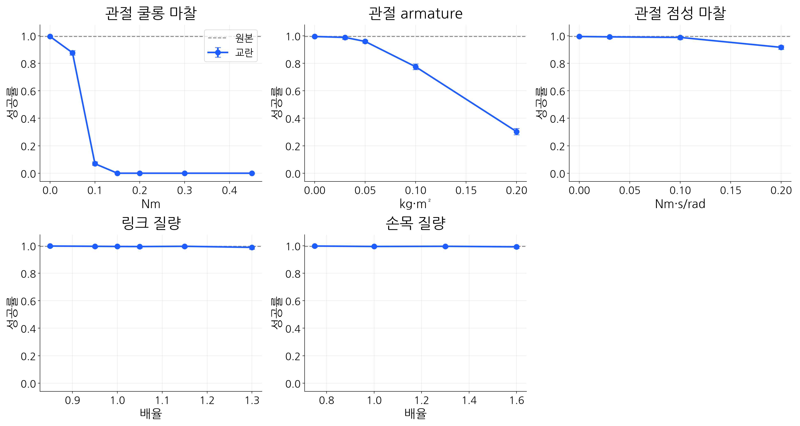

서울대학교 DYROS 인턴 유승민
그런데, 시뮬레이션에서는 작동
실제 환경에서는 작동하지 않음
시뮬레이션은 실제환경을 “비슷하게” 흉내 낸 것
너무나 많은 차이가 존재한다.(sim to real gap)
gap을 발생시키는 너무나 많은 요인들이 존재한다.
Sim-to-Real Gap의 원인 중 하나: 동역학 파라미터의 불확실성
M(q)q̈ + C(q, q̇)q̇ + g(q) + τfric = τ
이 중 무엇이 성공률을 가장 많이 떨어뜨리는가?
실제 로봇에서는 단일 물리 파라미터의 변인 통제·계측이 어려움
➔ 시뮬레이션을 통제된 실험실로 활용하도록 환경을 구성
로봇 Franka Emika Panda (7-DoF) + 2지 평행 그리퍼
태스크 Peg-in-Hole (반경 공차 0.057 mm)
시뮬레이터 Isaac Sim / Isaac Lab, Factory PegInsert 환경
제어·관측 태스크 공간 임피던스 제어, 비전 센서 없이 로봇 및 환경의 State 벡터만 활용
학습 PPO 알고리즘 적용, 네트워크 구조: MLP [512, 128, 64] + LSTM 1024
200 Epoch 학습 결과 ➔ 기본 환경(Base) 성공률 99.5 % 달성
· Input EE와 hole의 상대위치, EE의 자세, EE의 선속도·각속도, 직전 스텝의 action
· Output 태스크 공간 내 목표 EE 위치 및 자세
단일 변인 통제 기반 Peg-in-Hole 태스크 수행
➔ 각 동역학 파라미터별 성공률 정량 평가

쿨롱 마찰 0.10 Nm
99.5 % → 7 %
0.15 Nm부터 0 %
armature 0.1 kg·m²
99.5 % → 78 %
점성 마찰 · 링크 질량 · 손목 질량
변화 없음
결론: Peg-in-Hole 태스크 수행 시 갭의 주요 원인은 관절 쿨롱 마찰
다음 단계 (Next Steps)
감사합니다
서울대학교 DYROS 인턴 유승민
9